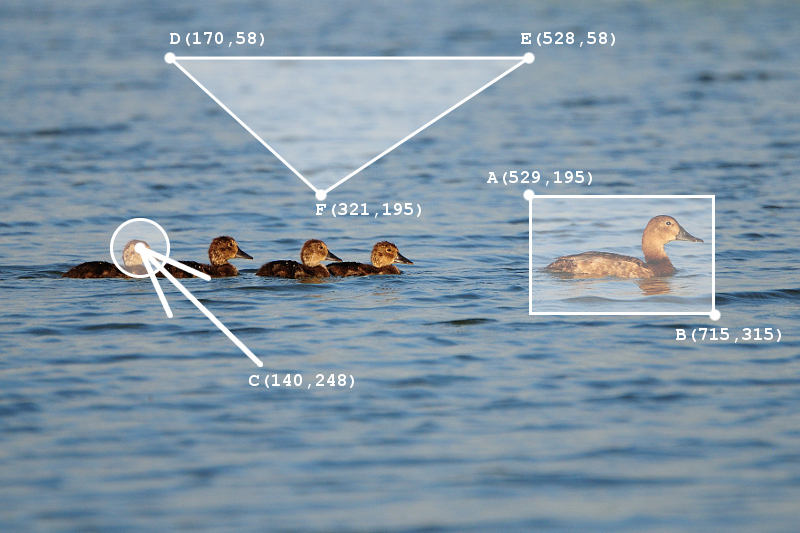

Mapa odsyłaczy to obrazek, który posiada obszary klikalne, które mogą być hiperłączami. W rzeczywistości na wybramy obraz tworzymy niewidzialną "folijkę", no której zaznaczamy wybrane przez nas obszary jako te, które będą odnośnikami. Można to wykorzystać na przykład przy mapach, gdzie w zależności na jaką część obszary klikniemy, to wydarzy się coś innego.
Element <map> odpowiada za deklarację mapy. Zawiera obowiązkowy atrybut name, który jest wykorzystywany przy osadzaniu obrazka za pomocą znacznika <img>.Wewnętrz <map> znajduje się znacznik <area/>, który definiuje obszar danego hiperłącza.
<area> zawiera nasteujące atrybuty:
shape - kształt aktywnego obszaru
Przykładowe użycie:
<body> <map name="mapaobrazka"> <area href="#" alt="kaczka" shape="rect" coords="529, 195, 715, 315"/> <area href="#" alt="kaczka" shape="circle" coords="140, 248, 30" /> <area href="#" alt="kaczka" shape="poly" coords="170,58,528,58,321,195"/> </map> <img src="images/kaczki.jpg" alt="kaczki" usemap="#mapaobrazka" /> </body>
Efekt
